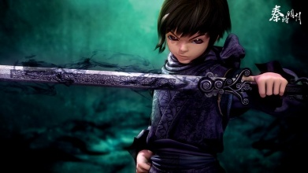

秦时明月在线播放

现任墨家巨子————天明
勇敢不是通过让别人为他担心来证明的尤其是那些关心他的人。强者是能够让他的朋友 亲人感到安全和放心。————天明

纵横家————盖聂以及卫庄
很多人被命运安排，而我安排命运。————卫庄
有些梦想虽然遥不可及，但不是不可能实现。只要我足够的强。————盖聂
墨家首领————高渐离以及雪女
乐曲本身单纯如镜，你之所以能够从白雪中听出那么深沉的悲伤，只有一个原因，那个一直没有从噩梦中醒来的人，恰恰就是你自己。————雪女
这样的乱世中，只有最坚强的生命才能存活下去。————高渐离
返回顶部